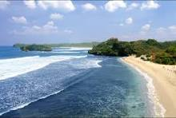
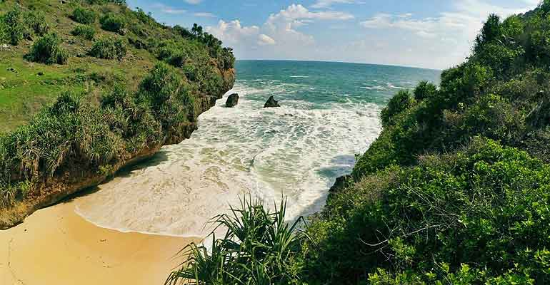
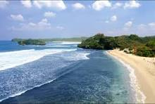
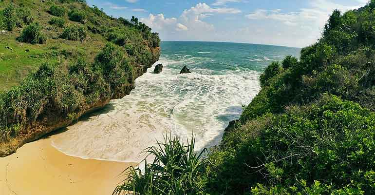

Pantai Srakung, sebuah surga tersembunyi di Gunungkidul, menawarkan keindahan alam yang memukau dan suasana yang damai. Terletak di Desa Pucung, Girisubo, Yogyakarta, pantai ini adalah tempat ideal untuk melarikan diri dari keramaian kota dan merasakan keaslian alam yang masih alami.
Dengan akses 24 jam penuh, Pantai Srakung memberikan fleksibilitas bagi pengunjung untuk menikmati keindahan pantai kapan saja. Namun, waktu terbaik untuk mengunjungi adalah saat sore hari, ketika matahari terbenam dan langit di atas pantai ini berubah menjadi palet warna yang menakjubkan, menciptakan panorama sunset yang spektakuler.
Biaya masuk ke pantai ini adalah nol, dan Anda hanya perlu mempersiapkan biaya parkir. Untuk mencapai pantai, pengunjung harus menuruni tebing dengan jalan setapak yang hanya dapat dilalui sepeda motor atau pejalan kaki, sementara mobil harus diparkir di bukit sebelum melanjutkan perjalanan ke pantai. Pantai Srakung telah mengalami perkembangan signifikan dalam hal aksesibilitas, dengan jalan baru yang dibangun melalui dana desa, membuat perjalanan menuju pantai lebih nyaman. Dengan pasir putih bersih dan ombak tenang, pantai ini ideal untuk bersantai, berjemur, atau menikmati kedamaian alam.
Sebagai pantai perawan, Srakung menawarkan kesempatan untuk menikmati keaslian alam tanpa gangguan, menjadikannya tempat yang sempurna bagi pencari ketenangan. Pengalaman berkemah di sini memungkinkan Anda menikmati momen magis dari senja hingga fajar, dalam suasana yang sepi dan asri.
Bagi mereka yang ingin merasakan sensasi liburan ala "My Trip My Adventure," Pantai Srakung menawarkan tantangan akses yang sebanding dengan pemandangan spektakuler. Pastikan untuk membawa bekal, karena fasilitas di sekitarnya terbatas, sehingga liburan ini benar-benar terasa lebih pribadi dan intim. Selain itu, pengalaman memancing di tebing karang menjadi daya tarik tersendiri, memungkinkan pengunjung untuk merasakan kebahagiaan saat menangkap ikan segar.
Dengan suasana yang mirip pantai pribadi, Pantai Srakung memberikan kesempatan untuk bersantai dan menenangkan pikiran, menjadikannya pilihan ideal untuk melarikan diri dari kesibukan sehari-hari. Jika Anda mencari tempat untuk menyegarkan pikiran dan menikmati keindahan alam yang masih alami, Pantai Srakung adalah jawabannya. Jadikan pengalaman Anda di sini sebagai kenangan tak terlupakan dan rasakan sendiri pesona dari surga tersembunyi ini.
 

Lihat
Lebih Banyak


Lihat
Lebih Banyak
Selamat datang di pusat informasi terbaru tentang wisata di Gunung Kidul! Di sini, Anda akan menemukan berbagai berita menarik seputar destinasi wisata, acara budaya, dan kegiatan alam yang bisa dinikmati di daerah ini. Dari pantai yang memukau hingga gua yang menakjubkan, Gunung Kidul menawarkan keindahan alam yang luar biasa dan pengalaman tak terlupakan. Ikuti berita terbaru untuk merencanakan perjalanan Anda selanjutnya dan temukan keajaiban alam yang tersembunyi di setiap sudutnya. lihat lebih banyak berita

Pantai Srakung adalah surga tersembunyi yang terletak di ujung timur Gunungkidul, menawarkan keindahan alam yang menakjubkan.
Baca Selengkapnya
Pantai Srakung adalah surga tersembunyi yang terletak di ujung timur Gunungkidul, menawarkan keindahan alam yang menakjubkan.
Baca Selengkapnya
Daftar pantai indah dan tersembunyi di Gunungkidul, termasuk Pantai Srakung yang menawarkan keindahan alami.
Baca Selengkapnya